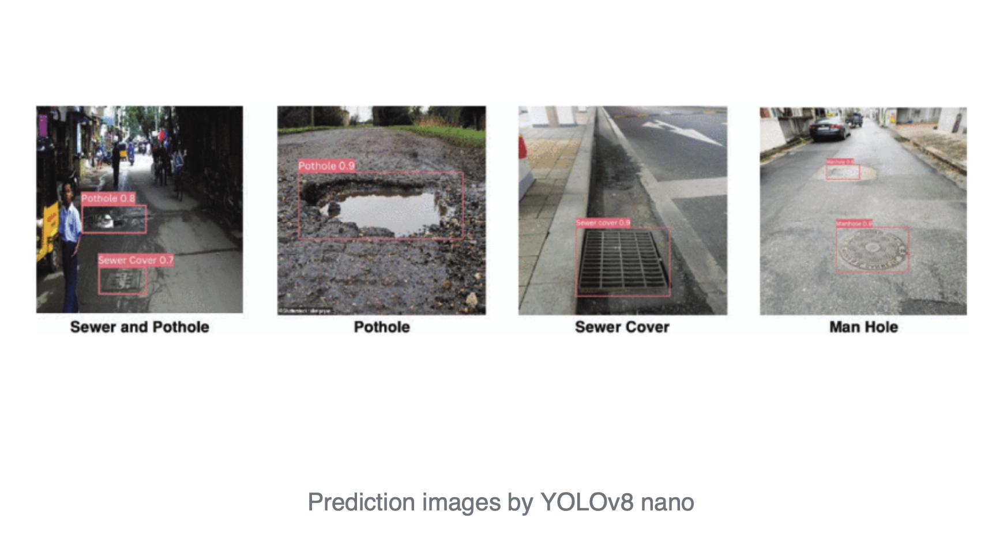

Introduction
The Importance of Road Safety and Infrastructure Maintenance
As transportation systems evolve, ensuring road safety and maintaining infrastructure have become top priorities. Factors like heavy rainfall, inadequate road maintenance, and natural disasters contribute to the formation of dangerous hazards, particularly potholes. These hazards cause over 4,800 accidents annually, leading to severe risks for motorists and pedestrians, while also creating substantial financial burdens from vehicle damages and repair costs. Swift detection and timely maintenance are crucial to mitigating these dangers and improving overall road conditions.
Introducing YOLOv8: A Breakthrough in Real-Time Object Detection
In this tutorial, we explore YOLOv8, the latest in object detection technology, developed by Ultralytics. YOLOv8 is a state-of-the-art deep learning model, known for its exceptional speed and accuracy in real-time applications. Building on the successes of its predecessors, YOLOv5 and YOLOv7, this version introduces significant advancements that make it a game-changer for detecting potholes, sewer covers, and manholes. With its robust architecture and real-time capabilities, YOLOv8 enables quicker, more accurate hazard detection, reducing the need for manual inspections and expensive sensor-based systems. 
Enhancing Road Safety with YOLOv8
This tutorial will guide you through the process of implementing YOLOv8 for pothole detection, providing a faster, more efficient solution for identifying road hazards. We’ll showcase how YOLOv8’s advanced features can detect hazards of varying sizes and types in real-time, improving road safety and maintenance efforts. By automating this detection process, YOLOv8 offers a scalable, cost-effective solution that can transform the way we approach road infrastructure, paving the way for safer, smarter transportation systems.